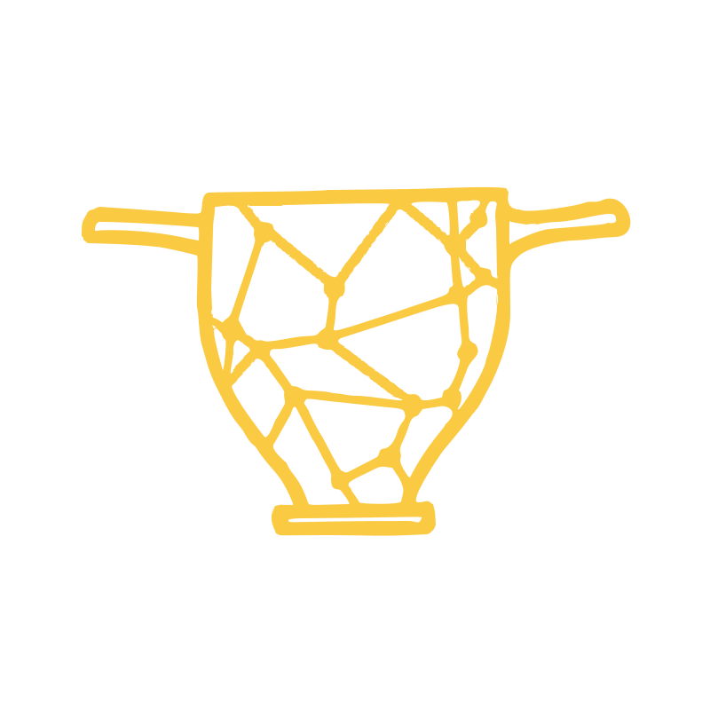

MeshNotes – 3D Annotation Tool for Research & HeritageMeshNotes is a free, browser-based tool for annotating 3D models with points, lines, polygons, surfaces, and boxes, designed for cultural heritage documentation. It allows teams to collaboratively mark and describe features on 3D models of archaeological sites, architecture, and artifacts (e.g. from photogrammetry, laser scanning, or structured light scanning).
Key features include multi-entry annotations with version history, measurement tools with configurable units, customizable groups with color coding and per-group opacity, draggable points for editing, multiple display modes, import of survey points from CSV files (placed on the model by an alignment made from picked control points), and W3C Web Annotation compliant export/import for interoperability and team collaboration.
The tool runs entirely in your browser — your 3D models and annotations stay on your computer by default. The optional Share feature can upload files to meshnotes.org for 90 days to generate a shareable link, but no data leaves your machine unless you explicitly choose to share. The export format follows the W3C Web Annotation Data Model, ensuring compatibility with IIIF-based systems and other annotation tools.
MeshNotes is built on open standards so that annotations and metadata stay usable outside the tool. Annotations follow the W3C Web Annotation Data Model, and the structured metadata maps to CIDOC CRM (with CRMdig for the digitisation process), using community vocabularies such as Getty AAT, PeriodO, and gazetteers (iDAI.gazetteer, Pleiades, GeoNames) for authority links.
The exact formats MeshNotes writes are documented in three versioned specifications:
These choices target interoperability with IIIF-based systems and infrastructures such as NFDI4Objects, and keep the data citable and archivable.
Developer: Nils Schnorr
Email: nils.schnorr@uni-saarland.de
Institution: Department of Classical Archaeology, Saarland University, Saarbrücken, Germany
MeshNotes uses the following open-source libraries:
All icons and the MeshNotes logo were designed by Lara-Sophie Braun.
MeshNotes itself is licensed under the Apache License, Version 2.0 — free to use, modify, and distribute. See the LICENSE file for details.
1. Load a model — Click Import ▾ and select 3D Model to open a 3D model file (.glb, .gltf, .obj, .ply, or .stl format). For OBJ files, you will be prompted to optionally add material (.mtl) and texture files.
2. Add annotations — Select a tool (Point, Line, Polygon, or Surface) and click on the model. Double-click to finish lines/polygons/surfaces.
3. Navigate annotations — Single-click an annotation in the sidebar to focus the camera on it. Double-click to open it for editing.
4. Adjust annotations — When no tool is active, drag any annotation point to reposition it. Use groups to organize and color-code your work.
5. Take measurements — Use the Measure tool to click two points and get the distance. Hold Ctrl while clicking to measure paths through multiple points. Press Escape to clear.
6. Export or share your work — Click Export ▾ to save annotations as JSON-LD for backup or team sharing, or to generate a PDF Report. Click Share to upload your model and annotations to meshnotes.org and generate a link that anyone can open directly in MeshNotes (expires after 90 days).
📱 Tablet users: MeshNotes works great on iPad with Apple Pencil. Use your stylus to annotate and your fingers to navigate. See the Tablet & Stylus Support section below for details.
Click Import ▾ and select 3D Model to open a 3D model file. The tool supports .glb, .gltf, .obj, .ply, and .stl formats. After loading, the face count is displayed in the bottom-right corner.
PLY Files: When loading a PLY file, you will be asked whether to add a texture image. If your PLY contains UV coordinates, the texture will be mapped onto the model. PLY files with vertex colors are loaded automatically without requiring a separate texture.
OBJ Files: When loading an OBJ file, you will be asked whether to add material and texture files. You can select a .mtl file together with texture images (.jpg, .png), or only texture images, or load the geometry without any materials. If only a texture is provided without an MTL file, it will be applied as a diffuse map.
Model Orientation: Ensure your model is oriented correctly (typically Y-up or Z-up) before exporting. The viewer's navigation is based on the model's original orientation and cannot be changed after loading. If your model appears upside down or sideways, re-export it with the correct orientation in your 3D software.
Tip: GLB is recommended for best compatibility as it embeds textures and orientation in a single file. If your model is in another format, you can convert it using Blender.
File → Export → glTF 2.0. In the export panel, expand Mesh, then Vertex Colors, and set Use Vertex Color to Active. This ensures that vertex color data is included in the GLB file and will be available in the Colors display mode.
MeshNotes works with 3D models in .glb, .gltf, .obj, .ply, and .stl formats. Choosing the right format and preparing your model well will give you the best experience.
Recommended format: GLB (Binary glTF) is the best all-around choice. It packages geometry, textures, and materials into a single file, loads quickly, and does not allow for misleading axial orientation
Format comparison:
.mtl and texture files. Often used for models from photogrammetry or SLS software. Geometry is stored as plain text, which makes OBJ files several times larger than the equivalent GLB and slow to parse — large OBJ exports frequently fail to load.File size: Because the whole model is held in browser memory, file size is a practical limit in its own right. As a rule of thumb, convert anything above roughly 1 GB to GLB before loading it. This matters most for OBJ and PLY: both are far bulkier than GLB for the same geometry, and large files in those formats routinely fail to load or bring down the browser tab. A Draco-compressed GLB of the same mesh is usually a fraction of the size and loads without trouble. There is no fixed cut-off — the ceiling depends on your machine, browser, and available memory — but if a large OBJ or PLY will not open, converting it is almost always the answer.
Face count & performance: The number of faces (triangles) in your model directly affects performance. After loading, the face count is displayed in the bottom-right corner with a color indicator:
Orientation: When loading OBJ, PLY, or STL files, MeshNotes will ask you which axis is "up" in your source software. Most photogrammetry and cultural heritage tools (Metashape, CloudCompare, MeshLab, Blender) use Z-up, while some game engines and web viewers use Y-up. Selecting the correct option ensures your model displays upright. GLB/GLTF files handle orientation automatically per the glTF specification. See the Coordinate System section below for more details.
Reducing file size (Draco compression): Large photogrammetry models can produce GLB files of several hundred megabytes. Draco compression significantly reduces geometry size while preserving visual quality — MeshNotes fully supports Draco-compressed GLB files. You can compress your models using browser-based tools such as OptimizeGLB, or locally via the command-line tool gltf-transform (npx gltf-transform draco input.glb output.glb). The local option avoids uploading your model to a third-party server.
Units: MeshNotes displays distances and scalebar values in whatever unit your model was created with. If your photogrammetry software exports in meters, distances will be in meters. If it exports in millimeters, they will be in millimeters. There is no unit conversion — consistency depends on your source data. Check your 3D software's export settings if distances seem off by a factor of 1000.
MeshNotes displays all models and exports all annotation coordinates with Z pointing up. This matches the convention used by most software in cultural heritage, photogrammetry, and geospatial work, including Metashape, CloudCompare, MeshLab, QGIS, and Blender.
Why this matters: When you annotate a model in MeshNotes and export the annotations as JSON, the coordinates in that file use Z-up. If a colleague opens the same model in a different software and overlays your annotations, the points will be in the correct positions — no manual coordinate conversion needed.
How it works internally: The 3D engine that MeshNotes is built on (Three.js) uses Y-up internally, which is common for web-based 3D viewers. MeshNotes handles the translation between these two conventions automatically, so you never need to worry about it. The View Helper in the top-right corner always shows Z (blue) pointing up, Y (green) pointing forward, and X (red) pointing right, reflecting the Z-up convention most users will be used to.
On import: When loading OBJ or PLY files, MeshNotes asks which axis is up in your source software and rotates the model accordingly. GLB/GLTF files always use Y-up by specification, so MeshNotes handles them automatically. When importing annotation files, MeshNotes checks the upAxis field in the JSON. Files marked as Z-up are loaded directly; older files without this field are treated as legacy Y-up data and converted automatically.
On export: All annotation JSON files include an "upAxis": "Z" field near the top of the file. This tells any software reading the file which coordinate convention to expect. The field is deliberately not prefixed with a MeshNotes-specific namespace, so it is easy for other tools to read and interpret.
Display Mode: Click the display button to cycle through available modes: Texture (shows the model's texture maps), Colors (shows vertex colors only, if present), Mesh (solid single-color surface), and Wireframe (edge-only view). The Colors mode is only available if the model contains vertex color data. The colors used for Mesh and Wireframe modes can be customized in Settings.
Wireframe on very large models: Wireframe rendering requires a separate set of edge data to be built alongside the model, roughly doubling its geometry in memory. Beyond about 12 million faces this exceeds what browsers can handle, so MeshNotes withdraws the mode rather than risk a crash: the display button then cycles Texture → Colors → Mesh → Texture, and a short message in the status bar explains why. Every other display mode remains available at any model size. To inspect topology on a model this large, work on a decimated copy.
Brightness slider: Adjust scene lighting from 0% to 300%. Opacity slider: Make the model transparent (10-100%) to see annotations that pass through it.
Annotation Display: In Settings → Viewport, four sliders (each ×0.25 to ×50) size the annotation overlay independently: Point Markers, Line & Polygon Vertices, Box Corner Handles and Text Size. Measurement markers are sized by their own Marker Size slider in Settings → Measurements. Splitting them apart lets you keep, for example, small vertices on a detailed polygon while standalone points stay prominent. The sliders use exponential scaling, so small movements have bigger effect at high values — making it easy to reach extreme sizes for very large or small models. These settings are saved automatically.
Light Source: By default, the main light follows your camera view, ensuring consistent illumination from any angle. Click the toggle to switch to Fixed Direction mode, which reveals two sliders: Horizontal (0°-360°) rotates the light around the model, and Vertical (-90° to +90°) adjusts the light height from below (-90°) through the horizon (0°) to directly above (+90°). This is ideal for raking light analysis of surface details like tool marks, inscriptions, or weathering patterns. The light is automatically boosted in fixed mode for better shadow visibility.
Background Color: In Settings, choose the viewport background color using the preset buttons (dark blue default, black, dark gray, gray, white) or click the color picker for a custom color. White or light gray backgrounds are ideal for publication-ready screenshots, while dark backgrounds reduce eye strain during extended annotation sessions. Your preference is saved automatically.
Click Point, then click on the model surface to place a point marker. A popup will appear where you can enter a name, description, author, and external links.
Click Line to start drawing a polyline. Single-click to add points along the line, double-click to finish and open the annotation popup. Lines are useful for marking edges, boundaries, cracks, or linear features.
Undo: Press Ctrl+Z (or Cmd+Z on Mac) to remove the last placed point. This allows you to correct mistakes without starting over.
Surface projection: By default, line edges are automatically projected onto the model surface — they follow the geometry's contour rather than cutting through it as straight lines. This works best on smaller objects with gently curved surfaces. If the projection deviates too far from the intended path (e.g., on complex geometry with deep recesses), MeshNotes falls back to a straight connection for that segment automatically. You can toggle surface projection on or off per annotation using the "Project line(s) to surface" checkbox in the annotation popup.
Click Polygon to start drawing a closed shape. Single-click to add vertices, double-click to close the polygon and open the annotation popup. Polygons are useful for marking areas, surfaces, or regions of interest.
Undo: Press Ctrl+Z (or Cmd+Z on Mac) to remove the last placed vertex. This allows you to correct mistakes without starting over.
Like line annotations, polygon edges are projected onto the model surface by default, following the geometry's contour. This can be toggled per annotation in the popup.
Click Surface to paint directly on the 3D model's mesh faces. Adjust the brush size using the slider (0.1-20% of model size), then click and drag to highlight faces. Right-click and drag to rotate the view while painting — this lets you paint a continuous surface annotation from multiple angles (e.g., wrapping around a statue's arm). Hold Shift while painting to erase. Double-click to finish and open the annotation popup.
Undo: Press Ctrl+Z (or Cmd+Z on Mac) to undo the last paint stroke. Each stroke (one mousedown-to-mouseup drag) is treated as one undoable step, including erase strokes. You can undo multiple strokes in succession.
Surface annotations are ideal for marking 3D regions like weathered areas, specific architectural features, or body parts on sculptures that can't be easily captured with flat polygons.
Click Box to activate the box tool, then click on the model to place a 3D box annotation. A default-sized box appears at the click location. Boxes are useful for marking volumetric regions like rooms, excavation contexts, architectural spaces, or reconstruction hypotheses.
Manipulating boxes:
Shift while rotating to snap to 15° incrementsUnlike other annotations, boxes can float freely in 3D space — they don't need to touch the model surface. This makes them ideal for marking "negative space" like missing architectural elements or hypothetical reconstructions.
The Box annotation tool was inspired by the Cuan3D annotation tool developed by Paula Dicke.
Click Measure to activate the measurement tool. Click two points on the model to measure the straight-line distance between them. Multiple measurements can be taken and all stay visible with their distance labels.
Multi-point measurement: Hold Ctrl (or Cmd on Mac) while clicking to measure a path through multiple points — useful for measuring around corners, along curved edges, or following a non-straight route. Keep holding Ctrl and clicking to add more points. The total path distance is shown as you go. Release Ctrl and click once more to finalize, or simply click without Ctrl when you have two or more points. Multi-point measurements display the total distance along with a breakdown of individual segment lengths (e.g., 1.234 + 2.345 + 3.456).
Undo: Press Ctrl+Z (or Cmd+Z on Mac) to remove the last placed measurement point before the measurement is finalized. This works for both simple two-point and multi-point measurements.
Managing measurements: Click the × button next to any measurement to delete just that one. Click on a measurement value to copy it to clipboard for pasting into documentation. Press Esc to clear all measurements at once.
Distances are displayed in the unit configured in Settings (default: "units"). You can set this to mm, cm, m, or a custom label. The actual scale depends on how your 3D model was created or exported — MeshNotes does not convert between units.
The Cutting Plane tool lets you extract cross-section profiles from your 3D model. It is located inside the Measure tool — when you activate Measure, the Cutting Plane panel appears alongside the measurement controls.
Workflow: First, rotate your camera to look at the model from the direction you want to cut through. Then click Spawn Plane — a semi-transparent blue plane appears perpendicular to your current viewpoint, centered on the model. A red preview line shows where the plane intersects the mesh in real time.
Adjusting the plane:
Extracting the profile: Once the plane is positioned, click Extract Profile. MeshNotes computes the exact geometric intersection between the plane and the mesh triangles, projects it onto the plane's 2D coordinate system, and displays a preview. From the preview you can download the profile as SVG (vector, ideal for publication figures) or PNG (raster, 2× resolution). Both formats include a scale bar using the unit configured in Settings.
Tips: You can spawn, adjust, and extract multiple profiles without leaving the Measure tool. Click Remove Plane to clear the cutting plane, or press Esc to leave the Measure tool entirely (which also removes the plane). The cutting plane is visual only — it does not modify the model or affect annotations.
Groups help organize annotations by category, phase, or team member. Click + Group in the sidebar to create a new group with a custom name and color. All annotations within a group share that color. Use the eye icon to show/hide all annotations in a group, and the edit icon to modify the group name, color, or opacity, or to delete the entire group. A default group is created automatically when you first annotate.
Group Opacity: Each group has an opacity slider (5–100%) that controls the transparency of all annotations in that group. This is useful when overlapping annotations from different groups need to remain distinguishable, or when you want to de-emphasize one group while focusing on another. Opacity settings are saved in the JSON export and restored on import.
Collapsing groups: Click the arrow at the left of a group's header to collapse or expand its list of annotations in the sidebar. Collapsing only tidies the sidebar — the annotations stay visible on the model. While a search term is active, collapsed groups are searched too and their matching annotations are listed. Groups created by a survey import start collapsed.
Show labels: The Show labels checkbox in the group popup switches the name labels of all annotations in the group on or off in the 3D view; the markers stay visible. Survey imports with many points start with their labels off (see Survey Points (CSV Import)). The collapsed state and the label setting are saved in the JSON-LD export.
Deleting a group: An empty group is deleted at once. If the group holds annotations, a dialog asks what happens to them: Move and delete group moves them to the group chosen under Move to, and Delete annotations deletes them together with the group, which cannot be undone. The last remaining group cannot be deleted.
Use the search box at the top of the sidebar to filter annotations by name. As you type, annotations and groups that don't match your search term are hidden from the list. Clear the search field to show all annotations again. This is helpful when working with many annotations and you need to quickly find a specific feature.
In the General Information section at the top of the sidebar, the Model Information item stores free-form notes about the entire model. Click the edit button or double-click to open it. Like annotations, it supports multiple entries from different team members with timestamps — useful for documenting the model’s origin, processing history, or general observations. The sidebar shows a preview of the latest entry.
Below Model Information, the Metadata Report provides a structured form for documenting the technical metadata of your 3D documentation project. Click the edit button or double-click to open it. The form covers seven sections: General Information (project title, location, timeline), Object Context (object type, material, dating, find spot, inventory number), Capture Metadata (documentation method, instrument, camera/scanner settings), Reference Metadata (GPS, scalebars, GCPs), Processing Metadata (software, algorithms, model details), Paradata (method rationale, sources, interpretive decisions, known limitations), and Legal (project lead, funding, copyright).
Subject kind & controlled vocabularies: At the top of the form, the Subject kind selector records what the documented subject is (movable object, feature, building, site, landscape, or mixed). This sets the CIDOC CRM root class used when the metadata is exported — it does not change which fields are shown. Several fields (Object Type, Material, Dating/Period, Location, Find Spot) also offer an optional authority URI input for linking to a controlled vocabulary such as Getty AAT, PeriodO, or a gazetteer. All of this is optional; the precise mapping is documented in the MeshNotes Metadata Format specification.
The template supports all common 3D documentation methods: photogrammetry, structured light scanning, LiDAR, and terrestrial laser scanning (TLS). Fields that don’t apply to your method can simply be left empty. Each section also allows adding custom fields for project-specific needs. A non-editable Data Management guideline with a recommended folder structure is shown at the bottom for reference.
Export & Import: The metadata popup has three buttons at the top:
Integration: Metadata is automatically included in the JSON-LD annotation export and restored on import. It also appears at the end of PDF reports (only filled fields are shown).
Per-model: Metadata belongs to the model you are documenting. You can fill it in before loading a 3D file, but loading a new model (or refreshing) clears the current metadata — MeshNotes warns you first and offers to export your work (annotations and metadata together, as JSON-LD) before continuing.
The sidebar shows how many fields are filled, with a preview of the first filled value.
Each annotation can have multiple entries from different users. When editing an annotation, you'll see all existing entries with their author and timestamp. Click + Add Entry to add your own observation without overwriting previous ones. Each entry has its own description, author name, and links. This is ideal for collaborative documentation where multiple team members contribute observations to the same feature.
Version history: When you edit an existing entry, the previous version is automatically preserved. You can view the version history by clicking Edit on any entry — a collapsible "Previous versions" section appears showing all past edits with their timestamps and authors. This ensures no information is lost during collaborative editing.
Single-click an annotation in the sidebar to focus the camera on it. Double-click to open it for editing. In the edit popup you can: change the annotation name and group, view all entries, edit existing entries (with confirmation to encourage adding new entries), delete individual entries, or delete the entire annotation. Your author name is remembered for convenience.
Version history: When editing an entry, a "Previous versions" section appears below the edit form. Click the toggle to expand it and see all previous versions of that entry, including who made each change and when. This read-only history helps you track how observations evolved over time and ensures accountability in team documentation.
Locked: Every annotation's edit popup has a Locked toggle that protects its position from accidental changes: a locked point or line/polygon vertex cannot be dragged, and a locked box cannot be moved, resized or rotated. Name, group and entries stay editable, and a locked annotation can still be deleted. The change takes effect when you click Save. Locked annotations show a padlock in the sidebar. New annotations start unlocked; points imported from a survey CSV start locked (see Survey Points (CSV Import)). The lock is saved in the JSON-LD export.
Survey points: For a point imported from a survey CSV, the edit popup also shows its Surveyed position (Easting, Northing, Height and the alignment that placed it).
When no tool is active, you can click and drag any annotation point to reposition it. The cursor changes to a hand when hovering over draggable points. While dragging, the point snaps to the model surface so your annotations stay attached to the geometry.
Lines and polygons: When you drag a point that belongs to a line or polygon, the connected edges update in real-time. If surface projection is enabled for that annotation, the adjacent edges are re-projected onto the model surface as you move the point — so the lines continue to follow the surface contour at the new position. This allows you to refine annotation boundaries precisely without recreating them.
Locked annotations: The points of a locked annotation cannot be dragged: the cursor does not change to a hand, and dragging on them rotates the view instead. Unlock the annotation in its edit popup first (see Editing Annotations). When an unlocked survey point is dragged, it keeps its surveyed coordinates and is marked as moved by hand.
Note: Surface annotations (painted faces) cannot be repositioned after creation. To adjust a surface annotation, delete it and paint a new one.
JSON-LD Export: Click Export ▾ and choose JSON-LD (.jsonld) to download all annotations in W3C Web Annotation format. This standard format ensures interoperability with other annotation tools and IIIF-compatible viewers. The export includes all entries, timestamps, metadata, groups, and model information.
Survey data in the export: When the session has survey alignments, the export also contains them (with their control points, quality figures and earlier fits) and the default alignment, and every imported point carries its surveyed position: Easting, Northing and Height, the original CSV values, the kept attributes, the source file and row, and the distance to the surface. Annotation locks, the collapsed and label settings of groups, and the model's centring offset are exported too. The format of these members is documented in section 10.1 of the Annotation format specification.
Model Files Export: Click Export ▾ and choose Model Files to download the original model files (including material and texture files for OBJ and PLY models). This is useful when you received a model via a share link and want to save it to your computer.
Import: Click Import ▾ and choose Annotations (.jsonld) to load annotations from a .json or .jsonld file. MeshNotes supports both the new W3C format and legacy MeshNotes files for backward compatibility. Imported annotations merge with existing ones — groups with the same name are combined. To import survey points from a CSV file, choose Survey points (CSV) instead (see Survey Points (CSV Import)).
Older MeshNotes versions: Versions before 1.6 can open files that contain survey data: all annotations, including imported survey points, load at the right positions. The alignments, surveyed positions, locks and group settings are ignored, though, and are lost if the file is exported again from such a version.
The W3C Web Annotation Data Model is a standard for interoperable annotations. Learn more at w3.org/TR/annotation-model
Click Import ▾ and choose Survey points (CSV) to turn the rows of a survey CSV file (for example the export of a GNSS rover or a total station) into point annotations on the model. Each row becomes a point at its surveyed position. The points are placed by an alignment: a fit, made inside MeshNotes from control points you pick on the model, that converts survey coordinates into the model's coordinate frame. The model never moves — the alignment only converts the survey coordinates, so existing annotations keep their positions. The menu item is available once a model is loaded.
When to use it: The CSV must hold metric, projected coordinates — Easting, Northing and Height in metres, for example UTM or a national grid. Latitude and longitude in degrees are not supported (the import refuses files whose coordinates look like degrees), and MeshNotes does not convert between coordinate systems; the coordinate system label you enter is a free-text note. The fit is rigid (rotation plus shift, scale fixed at 1), so the model should be at true scale in metres. It is meant for site-scale work: a warning appears when the control points span more than 2 km.
Overview: The first import in a coordinate system goes through four steps: map the columns (A), pick control points (B), review the fit (C), and select the points that lie on the model (D). The alignment is then saved with the annotations, and later imports in the same coordinate system go straight from step A to step D.
Click Continue to go on to step D, or Continue: pick control points for a new alignment.
A panel lists the CSV rows. The model stays free to navigate; the annotation tools in the toolbar are disabled while the panel is open. On narrow screens the panel becomes a sheet at the bottom; on a desktop you can drag it by its title bar.
Ctrl+Z (Cmd+Z on Mac) undoes the last pick change. Escape works in stages: it closes the review, then an open popup, clears the search, deselects the row, and finally asks before discarding the session. Cancel and the close button ask too. The picking session is not saved: reloading the page or loading another model ends it, and nothing has been imported yet at that point.Click Review the fit once the fit can be made.
A status chip next to the face count in the bottom-right corner shows the model's alignments: none, the RMS of a single alignment, or how many there are. Click it to open the Alignment Manager, which lists each alignment with its name, a Default badge, its verdict, coordinate system, height column, fit type and control points, RMS and largest residual, the number of survey points (and how many were moved by hand) and the earlier fits kept in its history.
Alignments are saved with the annotations: in the JSON-LD export, in the autosave and in share links. Loading another model clears them together with the annotations, after the usual unsaved-work warning. When a JSON-LD file is imported, alignments are matched by their identifier. A different alignment is added. For the same alignment, the more recently modified copy wins and the other fit is kept in its history. Survey points placed by the fit always follow the alignment that won: if they were placed with the other fit, they are moved to the winning fit and placed on the surface again, and the import status line says how many moved and how far. Points moved by hand are never moved this way; for them the newer entries decide, as for any annotation.
Click Share in the toolbar to open the sharing dialog. MeshNotes offers two sharing modes: Quick Share and Permanent Share.
Previously generated links: The Share dialog keeps a history of all links you have generated, showing the model name, creation date, and time remaining until expiry. You can copy any previous link or remove entries from the list. This history is stored in your browser’s local storage.
Recipient workflow: When someone opens a share link, the model and annotations load automatically in MeshNotes. The recipient can view, edit, and add their own annotations. To save the work, they can export the annotations as JSON-LD, download the model files via Export ▾ → Model Files, or re-share with a new link.
Uploads your model and annotations to meshnotes.org and generates a link. Anyone with the link can open the model and annotations directly in MeshNotes — no file download or manual import needed. Quick Share links expire after 90 days. Click Generate Link to upload. Maximum file size: 100 MB.
Tip: Large GLB models can be reduced significantly using Draco compression before sharing. See the Model Preparation & Format Guide section for details and tools.
For long-term, citable sharing, upload your model and annotation files to a CORS-friendly repository that supports direct file access from the browser. Enter the file URLs in the dialog, select the model format, and MeshNotes generates a permanent link. These links do not expire and do not use meshnotes.org storage — the files are loaded directly from your repository. If your repository mints DOIs, the link is citable in publications. The steps below use Zenodo as an example.
Example with Zenodo: Zenodo is a free research data repository that gives every upload a DOI. MeshNotes loads the files directly from Zenodo, so the link works for as long as the Zenodo record exists. Other repositories can be used in the same way if they allow a website on another address to fetch their files (CORS).
1. Prepare the two files
2. Upload to Zenodo
zenodo.org/records/1234567. That number is the record ID.3. Build the two file links
MeshNotes needs a direct link to each file, in this form:
https://zenodo.org/api/records/RECORD-ID/files/FILE-NAME/content
Put in the record ID and the exact file name, once for the model and once for the annotation file. If you are unsure about the spelling, open https://zenodo.org/api/records/RECORD-ID in the browser: it shows the record as text, including every file with its link. The download links on the Zenodo record page (ending in ?download=1) and the DOI link do not work in MeshNotes.
4. Generate the permanent link
5. Check the link and add it to the record on the repository (in this example Zenodo)
Updating the annotations later: Create a New version of the Zenodo record with the updated annotation file. Every version has its own record ID, so build the two file links and the permanent link again. The earlier link keeps showing the earlier state. Zenodo gives each version its own DOI, plus one DOI that always leads to the newest version; cite the version DOI when you refer to a particular state.
Example: The MeshNotes example dataset, an annotated skyphos from the Antikensammlung of Saarland University, was published this way: zenodo.org/records/23190439. Open the example in MeshNotes to see the result of the steps above.
MeshNotes is designed for teams working on the same 3D model. There are two ways to collaborate:
Online collaboration (Quick Share): Use the Share button to upload your annotated model and send the link to collaborators. They open the link, see your model and annotations, add their own work, and re-share with a new link. Each share creates a new snapshot — there is no real-time editing, but the workflow is fast and requires no file management. See the Sharing section above for details.
Offline collaboration (file exchange): For fully offline workflows or when data confidentiality is important, use JSON-LD export/import. Multiple people can annotate independently and then merge their work — no server or shared account required.
How it works: Every annotation and every entry within an annotation is assigned a unique ID (UUID) when created. When you import a JSON file, MeshNotes compares these IDs to determine what is new and what already exists:
Example team workflow:
This process can be repeated as many times as needed. Each round of import merges only what is new or updated, so you never lose work and annotations are never duplicated.
MeshNotes exports annotations following the W3C Web Annotation Data Model, an internationally recognized standard for representing annotations on digital resources. This was a deliberate choice to ensure long-term interoperability and academic credibility.
What gets stored: Each annotation is a self-contained JSON-LD object containing its geometry (as a typed geometry selector whose coordinates are encoded as 3D WKT), all entries with author, description, links, and timestamps, as well as the group assignment and annotation type. The exported file is a standard AnnotationCollection that also includes group definitions, model information, and the metadata report.
Why it matters: Using a W3C standard means your annotation data is not locked into MeshNotes. The JSON-LD files are human-readable, can be parsed by any programming language, and are compatible with the broader ecosystem of IIIF-based annotation tools and digital humanities infrastructure. This makes MeshNotes annotations suitable for academic publication, archival, and integration into larger research data management workflows.
Formal specifications: The exact formats MeshNotes writes are documented in three versioned, citable specifications: the Annotation format (the AnnotationCollection structure), the Selector format (how each geometry type is encoded), and the Metadata format (the structured metadata block and its CIDOC CRM crosswalk). These let other software read MeshNotes files reliably.
The exported .jsonld files can be opened in any text editor to inspect their contents. Each annotation's geometry is stored as a WKT string in the selector's meshnotes:wkt field.
Click Export ▾ and choose PDF Report to generate a comprehensive documentation report of your annotated model. The report is designed for academic documentation, publication appendices, and archival. Page size (A4, Letter, A3), orientation, screenshot quality (DPI), camera framing (distance and angle), report title, institution, project name, and accent color can all be customized in Settings.
Report structure:
Controlling report content: Only visible annotations are included in the PDF. Use group visibility (the eye icon) to hide annotations you don't want in the report. For example, you could hide preliminary annotations and only include finalized ones, or generate separate reports per group by toggling visibility before each export. This matters for survey imports: every visible point gets its own page, so an import of hundreds of points makes a long report and a large file.
Click Screenshot ▾ and choose Screenshot to save the current view as a PNG image. The screenshot includes all visible annotations, name labels, and measurement lines exactly as shown on screen — useful for documentation, reports, and publications.
Resolution: In Settings → Export → Screenshot, you can choose the screenshot resolution: Standard (1×) captures at screen resolution, High (2×) renders at double resolution for sharper detail when zoomed in, and Ultra (4×) renders at four times the resolution for maximum clarity. Higher resolutions may take longer on large models.
Scalebar: In Orthographic camera mode, screenshots automatically include a scalebar. It sits bottom-left in a strip added below the image in your background colour, so it never covers the model however far you zoom in; the saved image is therefore slightly taller than the viewport. The scalebar is drawn as a thin rule with a tick at each end and the length below it, matching the scale bars on profile and plate exports. Values are rounded to clean numbers (e.g., 1, 2, 5, 10, 20, 50...) for readability, and the unit label matches the measurement unit configured in Settings. The bar is drawn in black or white, whichever contrasts with your background colour.
If you take a screenshot while in Perspective mode, MeshNotes will ask whether you want to switch to Orthographic view first. A scalebar can only be accurate in orthographic mode, where scale is uniform across the entire image — in perspective view, objects further from the camera appear smaller, making a single scalebar misleading.
Click Screenshot ▾ and choose Six-View Plate… to render the model from all six axis directions and arrange them in the unfolded-cube layout used for object plates in archaeological publications:
[ Top ]
[ Back ] [ Left ] [ Front ] [ Right ]
[ Bottom ]
Framing is fixed to the object. Each view is framed to the face it shows, and all six are rendered at one shared scale — which is what makes the single scale bar below the block valid. Framing comes from the model's bounding box rather than the viewport, so the same model always produces the same plate, and two objects exported the same way are directly comparable. Only geometry that is actually visible counts towards the framing, so hidden parts inside a model file do not push the object into a corner.
What appears is what you see. Annotations, labels and measurements are included if they are visible in the viewport. To produce a clean object-only plate, toggle them off before exporting.
PNG or PDF. After choosing Six-View Plate you are asked for an output format. PNG has a transparent background, so the plate can be placed directly onto a page or figure without a background block; the scale bar is drawn in black, on the assumption that it will sit on white paper. PDF places the same transparent images on a white page, fitted to the page size and orientation from the PDF Export settings, with the scale bar drawn as vector lines.
As with screenshots, a plate exported from Perspective mode will be offered a switch to Orthographic first; without it the views are rendered but no scale bar is drawn.
Left-click + drag: Rotate the view around the model. Right-click + drag: Pan the view. Scroll wheel: Zoom in/out. Escape: Cancel current drawing action, deselect tool, or clear all measurements.
MeshNotes is optimized for tablets with stylus input (e.g., iPad with Apple Pencil). On touch devices, the interface automatically adapts with a collapsible sidebar, touch-friendly controls, and separate handling of stylus vs. finger input.
Input separation: MeshNotes distinguishes between stylus and finger input:
This separation lets you annotate and navigate without switching modes — simply pick up the stylus to annotate, or use your fingers to move around the model.
Stylus gestures:
Apple Pencil barrel tap: If you have an Apple Pencil (2nd generation) and have configured it in iPad Settings → Apple Pencil → "Switch between current tool and eraser", you can use the barrel double-tap as an alternative to double-tapping on screen. This is especially convenient for finishing lines, polygons, and confirming box placements without lifting your hand.
Box rotation: To rotate a box on tablet, use a two-finger twist gesture while the box is selected. This replaces the right-click rotation used on desktop.
Sidebar: On tablets, the sidebar starts collapsed to maximize viewport space. Tap the arrow button on the right edge to expand/collapse it. When collapsed, the viewport automatically expands to use the full screen width.
MeshNotes can be installed as an app and used completely offline — ideal for fieldwork on a tablet with no reliable connection. Everything runs locally on your device; only the optional Share upload needs the internet.
Install it (once, while online):
A MeshNotes icon is added to your home screen. Launched from there, it opens full-screen like a native app.
Work offline: With no connection, open MeshNotes from the home-screen icon and load your 3D model from local files as usual. All annotation tools, the PDF and JSON-LD exports, and this manual work offline. The 3D model itself is not stored by the app, so reopen your model file at the start of each session.
Your work is auto-saved: While you annotate, MeshNotes keeps a local backup in the browser. If the app is closed — or the tablet drops it from memory in the background — reopen the same model and MeshNotes will offer to restore your last session. As a habit, still export to JSON-LD (Export ▾ → JSON-LD) before closing so you always have a file copy on your device.
Staying up to date: When you are back online, MeshNotes checks for a newer version and shows a small “new version available” banner; tap Reload to update. It never reloads on its own while you are working.
Click the Perspective/Orthographic button in the top-right corner of the viewport to toggle between camera modes. Perspective view shows depth with natural foreshortening. Orthographic view removes perspective distortion, making parallel lines appear parallel — useful for accurate measurements, technical drawings, and architectural documentation.
Click the Flip button in the bottom-right panel to rotate the model 180° upside down. This is useful for objects like coins where the front and back sides are stamped at different angles, making the reverse side difficult to reach with normal orbit controls.
Purely visual: The flip is a temporary display effect only. It does not change the model's actual orientation, and it does not affect annotation coordinates. All annotations — whether created before, during, or after flipping — are stored in the same coordinate space as if the model were in its original orientation. You can freely toggle the flip on and off without any impact on your data.
Export safety: JSON exports, PDF reports, and screenshots taken while the model is flipped will contain the same annotation coordinates as exports made without flipping. The flip state is never saved or exported — it is purely a viewing convenience that resets when you load a new model.
Annotations while flipped: You can create, edit, drag, and delete annotations normally while the model is flipped. New annotations placed on the visible (flipped) surface are automatically stored with the correct non-flipped coordinates. Existing annotations remain correctly positioned when you toggle the flip on or off.
In the top-right corner of the viewport you'll find the View Helper, an interactive widget provided by the Three.js library. It displays three colored axis lines — X (red), Y (green), and Z (blue) — radiating from a central point, with labeled circles at each positive axis end and smaller circles at each negative end. As you rotate the model, the View Helper rotates along with it, always showing your current camera orientation at a glance.
Click any axis circle to smoothly animate the camera to that standard view direction (e.g., click the Z circle for a top-down view, click the Y circle for a front view). This is particularly useful for consistent documentation — for example, always capturing the same angle of an artifact for comparison, or quickly switching between front and side views while annotating.
MeshNotes runs entirely in your web browser. Your 3D models, annotations, and all other data remain on your computer by default. The tool does not use cookies, analytics, or tracking, and all program libraries (Three.js, jsPDF, pdf-lib, and others) are served from MeshNotes itself rather than third-party CDNs. The only network request during normal use is loading the application from its host; see the Legal / Data section for details, or run MeshNotes locally (see below) to keep everything fully offline.
Sharing (optional): The Quick Share feature uploads your model and annotations to meshnotes.org (hosted on Cloudflare) to generate a temporary shareable link. Files are automatically deleted after 90 days. No data leaves your computer unless you explicitly click "Generate Link" in the Share dialog. The Permanent sharing option does not upload anything to meshnotes.org — it generates a link that points to files you have hosted yourself on a repository of your choice. If data confidentiality is critical, use the offline JSON-LD export/import workflow instead.
When hosted on GitHub Pages, the application files are downloaded once, after which all processing happens locally. For offline use, you can clone or download the GitHub repository and run a local web server (e.g., python -m http.server or VS Code Live Server). Note that opening index.html directly via file:// won't work due to browser security restrictions on ES modules.
Offline use on a tablet (Add to Home Screen): MeshNotes can also be installed for offline use directly from the website — no repository download needed. Open meshnotes.org once while online, then use your browser's Add to Home Screen option (on iPad Safari: Share → Add to Home Screen). Launched from the home screen it runs full-screen and works without a connection; only the optional Share upload needs the internet. The 3D model itself is not stored by the app, so reopen your local model file at the start of each session.
Protecting your work offline: While you annotate, MeshNotes automatically keeps a local backup of your annotations in your browser. If the app closes or reloads — which tablets sometimes do on their own when memory is low — reopen the same model file and MeshNotes will offer to restore your last session. As an added safeguard it is still good practice to export your annotations (Export ▾ → JSON-LD) before closing the app, especially when working offline, so a copy is always saved to your device.
Exported JSON and PDF files are generated locally in your browser and saved directly to your downloads folder. Sharing annotation data with collaborators is always an explicit action on your part — you decide when and with whom to share your exported files. This makes MeshNotes suitable for documenting sensitive or unpublished archaeological sites where data confidentiality is important.
Click the Settings button in the toolbar to open the settings panel. All settings are saved automatically in your browser and persist between sessions. The panel is organised into five categories, listed down the left-hand side: Identity, Viewport, Measure, Export and Survey import. Click a category to show its settings. You can drag the panel by its title bar to move it clear of the model; it stays where you put it for the rest of the session.
Author & Language: Set a Default Author Name that is pre-filled whenever you create a new annotation entry, saving you from typing it each time. Add an optional ORCID iD to identify yourself unambiguously in the exported data — it is attached to the entries you author under that name, and accepts either a 16-digit iD or a full https://orcid.org/… URL. Annotation Language records the language you write in as a BCP-47 tag, stored per entry and preserved through export, import and merge. Entries keep the language they were written in, so commenting on someone else's annotation never rewrites theirs.
Background Color: Choose the viewport background from preset colors (dark blue, black, dark gray, gray, white) or pick a custom color. White or light backgrounds are ideal for publication screenshots; dark backgrounds are easier on the eyes during long annotation sessions.
Model Display: Customize the Mesh Color and Wireframe Color used in the Mesh and Wireframe display modes. The Texture and Colors modes take their appearance from the model itself and are unaffected.
Marker & Label Size: Separate multipliers scale point markers, line & polygon vertices, box corner handles and text labels, so each class can be tuned for your model without disturbing the others; measurement markers have their own slider in the Measurements section. Note that markers double as the grab targets for dragging points and resizing boxes — if one becomes too small to hit reliably, enlarge it here. The sliders use exponential scaling for easy fine-tuning at both small and large values.
Annotation Callout: Show callout when an annotation is selected controls whether the panel appears at all. Switch it off and a selected annotation keeps its name on the label in the model instead, as it did before the callout existed; camera centring and marker emphasis are unaffected. Opacity (20–100%) sets how solid the panel is. Lower it to let the model show through on close-up views. Both changes apply immediately, including while the callout is already on screen.
Measurements: Choose a Display unit (units, mm, cm, m, or custom). This unit labels measurement distances and every scale bar MeshNotes draws — on profile exports, orthographic screenshots, six-view plates and PDF reports. MeshNotes does not convert between units; the actual scale depends on how your model was created or exported. When a survey alignment with a Good or Check fit shows that the model is in metres, MeshNotes offers to set the unit to m (see Survey Points (CSV Import)). You can also customize the Line & Label Color and Point Color of measurements to stand out against your model. Marker Size scales the measurement point markers, independently of the annotation markers — those have their own sliders under Viewport → Marker & Label Size.
Page Setup: Page Size (A4, Letter, or A3) and Orientation (portrait or landscape) are shared by every PDF MeshNotes produces — both the PDF report and the six-view plate exported as PDF.
Screenshot: Resolution sets how sharply single screenshots are captured — Standard (1×) at screen resolution, High (2×) at double, and Ultra (4×) at four times resolution. Higher resolutions produce sharper images but may be slower on large models.
Six-View Plate: Cell Shape selects between a tightly fitted net and uniform cells. PNG Width sets the total width of the exported plate in pixels, and PDF Resolution the render resolution of the PDF plate in DPI, independent of the PDF report's own setting.
PDF Report: Configure your reports with a custom Report Title, Institution, and Project Name that appear on the title page, plus an Accent Color for headings and decorative elements. Screenshot Resolution (72, 150, or 300 DPI) sets how the per-annotation screenshots are rendered. The Camera Distance multiplier (×0.5 to ×5.0) controls how far the camera is placed from each annotation — keep it low for large objects like buildings, and increase it for small objects like coins or sherds to prevent the camera from clipping through the model. The Camera Angle (15° to 80°) sets the elevation above the horizontal plane — steep angles give a top-down view, shallow angles show the object more from the side.
Imported Points: Lock imported points (on by default) makes points imported from a survey CSV start locked, so they cannot be dragged by accident; each point's lock can still be switched in its edit popup. Hide labels of large imports (above 50 points by default) starts a new import group with its labels off when it receives more points than this; an existing group's labels are never changed. Imported points use the Point Markers size; the markers shown while picking control points have their own Dot size slider in the picking panel. The column mapping of each CSV header is remembered, for the last 20 headers, and offered again for a file with the same header.
Alignment & Placement: Residual warning (5 cm) flags a control point whose residual is larger, while picking, in the review and in the Alignment Manager; the RMS limits of the Good and Poor verdicts are fixed. Surface-distance warning (10 cm) marks rows whose fitted position lies farther from the model surface, in the selection list and the import summary. Distance limit for selecting points on the model (0.5 m) decides which rows are ticked in the selection step; the selection step can change it for a single import.
PDF Report: Include alignment summary in PDF report (on by default) adds a section listing the alignments used by the annotations in the report.
Reset: Click Reset All Settings to Default at the bottom of the panel to restore every preference above to its original value, including the report title, institution and project name, and to forget the remembered CSV column mappings.
Attached to annotation entries you author under the Default Author Name above, identifying you in the exported data. Accepts a 16-digit ORCID iD or a full https://orcid.org/… URL.
Language of the annotation texts you write, stored per entry and kept in the exported data. Entries keep the language they were written in — commenting on someone else's annotation never changes theirs. “Browser default” uses your browser's language.
White or light gray suits publication screenshots; dark backgrounds are easier on the eyes during long annotation sessions.
Used by the Mesh and Wireframe display modes. Texture and Colors modes take their appearance from the model itself.
Each marker class scales on its own, so a detailed polygon can keep small vertices while standalone points stay prominent. Measurement markers have their own slider under Measurements. Markers are also the grab targets for dragging points and resizing boxes — if one gets too small to hit, enlarge it here. The sliders are exponential, so small movements have a bigger effect at high values.
The panel shown beside an annotation while it is selected in the sidebar. Lower values let the model show through it. Switch the callout off to keep the older behaviour, in which the annotation's name stays on its label in the model; either way, selecting still centres the camera and emphasises the geometry. The callout is interface only — it never appears in screenshots, the six-view plate or the PDF report.
Marker size applies to measurement points only; annotation markers and labels are scaled under Viewport → Marker & Label Size. The display unit labels measurement distances and every scale bar MeshNotes draws — on profiles, orthographic screenshots, six-view plates and PDF reports. MeshNotes does not convert between units; the actual scale depends on how the model was exported.
Shared by every PDF MeshNotes produces — both the PDF report and the six-view plate exported as PDF.
Higher quality renders a sharper image. Ultra may be slow on large models.
Fitted sizes every cell to the face it shows, so the plate packs tightly. Uniform gives all six views the same cell, which looks more regular but leaves margin around the narrower views.
Total width of the whole plate. Very large plates may be reduced to stay within the browser's canvas limit; the export reports the size it actually produced.
Render resolution for the PDF plate, independent of the PDF Report DPI setting. 300 DPI suits most print work; 600 DPI is worth it for small objects reproduced large.
How far the camera is placed from each annotation. Lower values suit large objects (buildings, walls); raise this for small objects (coins, sherds) to prevent the camera from clipping through the model.
Elevation angle above the horizontal. Steep angles (70–80°) give a top-down view; shallow angles (15–30°) show the object more from the side. The default (60°) works well for most cases.
Locked points cannot be dragged by accident. The lock can still be switched for each point in its edit popup; points imported earlier keep theirs.
A new import group with more points than this starts with its labels off; switch them on in the group's settings. An import into an existing group never changes its labels. Marker size follows the Point Markers slider under Viewport → Marker & Label Size.
The column mapping of each CSV header (up to the last 20) is remembered and offered again for a file with the same header. Reset All Settings clears it.
A control point whose residual is larger than this is flagged while picking, in the review and in the Alignment Manager. The RMS limits of the Good and Poor verdicts are fixed; a residual above this turns Good into Check.
Rows whose fitted position lies farther than this from the model surface are marked in the selection list and listed in the import summary.
Rows within this distance of the surface are ticked in the selection step, and preview markers beyond it are dimmed while picking control points. The selection step can change the limit for a single import.
Adds a section after the metadata pages listing the alignments used by the annotations in the report, with their fit figures.
Open Source Repository
Want to use the tool without accessing this website? Feel free to download or clone the repository at github.com/NilsSchnorr/MeshNotes
Nils Schnorr
nils.schnorr@uni-saarland.de
Phone: +49 681 302-3315
Universität des Saarlandes
Fakultät P - Altertumswissenschaften
Klassische Archäologie
Campus Gebäude B3.1 Raum 1.22
66123 Saarbrücken, Germany
Liability for Content
As a service provider, we are responsible for our own content on these pages in accordance with general legislation pursuant to Section 7 (1) of the German Digital Services Act (DDG). However, according to Sections 8 to 10 DDG, we are not obligated to monitor transmitted or stored third-party information or to investigate circumstances that indicate illegal activity. Obligations to remove or block the use of information under general law remain unaffected. However, liability in this regard is only possible from the time of knowledge of a specific infringement. Upon becoming aware of such violations, we will remove this content immediately.
Liability for Links
Our website contains links to external third-party websites over whose content we have no control. Therefore, we cannot accept any liability for this third-party content. The respective provider or operator of the linked pages is always responsible for the content of those pages. The linked pages were checked for possible legal violations at the time of linking. Illegal content was not recognizable at the time of linking. Permanent content control of the linked pages is not reasonable without concrete evidence of a violation of the law. Upon becoming aware of legal violations, we will remove such links immediately.
Copyright
The content and works created by the site operators on these pages are subject to German copyright law. Duplication, processing, distribution, and any kind of exploitation outside the limits of copyright law require the written consent of the respective author or creator. Insofar as the content on this site was not created by the operator, the copyrights of third parties are respected. In particular, third-party content is marked as such. Should you nevertheless become aware of a copyright infringement, please inform us accordingly. Upon becoming aware of legal violations, we will remove such content immediately.
The controller within the meaning of the General Data Protection Regulation (GDPR) is:
Nils Schnorr
nils.schnorr@uni-saarland.de
Phone: +49 681 302-3315
MeshNotes does not use cookies, analytics, or tracking. All 3D model processing and annotation work happens entirely in your browser, and all program libraries are served from this site itself rather than third-party content delivery networks. Aside from the standard web-hosting requests described below, no user data is transmitted to any server during normal use. Local browser storage is used exclusively on your device and is never shared with anyone: localStorage holds your display preferences (e.g., background color, point size) and share-link history, and IndexedDB holds an automatic local backup of your current annotations so that in-progress work can be recovered if the browser or app closes unexpectedly (for example while working offline).
The optional Share feature allows users to upload model files and annotations to meshnotes.org to generate a shareable link. This upload is processed and stored using Cloudflare Workers and R2 object storage, services provided by Cloudflare, Inc., 101 Townsend St, San Francisco, CA 94107, USA. Uploaded files are automatically deleted after 90 days. No data is uploaded unless the user explicitly clicks "Generate Link" in the Share dialog. When uploading, Cloudflare may process the user's IP address and request metadata. This processing is based on our legitimate interest in providing the sharing functionality (Art. 6(1)(f) GDPR). Cloudflare's handling of data is described in their Privacy Policy. Data transfers to the US are covered by the EU-US Data Privacy Framework.
This tool is hosted on GitHub Pages, a service provided by GitHub Inc., 88 Colin P Kelly Jr St, San Francisco, CA 94107, USA. When you access this website, GitHub’s servers automatically process your IP address, the requested page, your browser type, and your operating system in server logs. This processing is necessary for delivering the website and is based on our legitimate interest in providing this tool (Art. 6(1)(f) GDPR).
GitHub’s handling of data is described in their Privacy Policy. GitHub is based in the United States. Data transfers to the US are covered by the EU-US Data Privacy Framework (European Commission adequacy decision of 10 July 2023, C(2023)4745).
Server logs are retained according to GitHub’s standard retention periods. The controller has no access to these logs.
All third-party JavaScript libraries (Three.js, three-mesh-bvh, jsPDF, pdf-lib, and the Draco decoder) are bundled with MeshNotes and served from this site's own origin. They are not loaded from external content delivery networks, so opening MeshNotes does not transmit your IP address or any request data to third parties such as unpkg, cdnjs, or Google. The only server your browser contacts when loading the page is the MeshNotes host itself (GitHub Pages, described above).
Under the GDPR, you have the right to access (Art. 15), rectification (Art. 16), erasure (Art. 17), restriction of processing (Art. 18), data portability (Art. 20), and objection to processing (Art. 21). To exercise these rights, contact the controller at the address above.
You also have the right to lodge a complaint with a supervisory authority. The responsible authority is:
Unabhängiges Datenschutzzentrum Saarland
Fritz-Dobisch-Straße 12, 66111 Saarbrücken
www.datenschutz.saarland.de
MeshNotes is an open-source project hosted at github.com/NilsSchnorr/MeshNotes. You can contribute if you wish, for example by submitting a pull request on GitHub. Please note: This project is published under the Apache License, Version 2.0, which will also apply to your contributions if the pull requests are accepted.
Nils Schnorr
nils.schnorr@uni-saarland.de
Telefon: +49 681 302-3315
Universität des Saarlandes
Fakultät P - Altertumswissenschaften
Klassische Archäologie
Campus Gebäude B3.1 Raum 1.22
66123 Saarbrücken, Germany
Haftung für Inhalte
Als Diensteanbieter sind wir gemäß § 7 Abs.1 DDG für eigene Inhalte auf diesen Seiten nach den allgemeinen Gesetzen verantwortlich. Nach §§ 8 bis 10 DDG sind wir als Diensteanbieter jedoch nicht verpflichtet, übermittelte oder gespeicherte fremde Informationen zu überwachen oder nach Umständen zu forschen, die auf eine rechtswidrige Tätigkeit hinweisen. Verpflichtungen zur Entfernung oder Sperrung der Nutzung von Informationen nach den allgemeinen Gesetzen bleiben hiervon unberührt. Eine diesbezügliche Haftung ist jedoch erst ab dem Zeitpunkt der Kenntnis einer konkreten Rechtsverletzung möglich. Bei Bekanntwerden von entsprechenden Rechtsverletzungen werden wir diese Inhalte umgehend entfernen.
Haftung für Links
Unser Angebot enthält Links zu externen Webseiten Dritter, auf deren Inhalte wir keinen Einfluss haben. Deshalb können wir für diese fremden Inhalte auch keine Gewähr übernehmen. Für die Inhalte der verlinkten Seiten ist stets der jeweilige Anbieter oder Betreiber der Seiten verantwortlich. Die verlinkten Seiten wurden zum Zeitpunkt der Verlinkung auf mögliche Rechtsverstöße überprüft. Rechtswidrige Inhalte waren zum Zeitpunkt der Verlinkung nicht erkennbar. Eine permanente inhaltliche Kontrolle der verlinkten Seiten ist jedoch ohne konkrete Anhaltspunkte einer Rechtsverletzung nicht zumutbar. Bei Bekanntwerden von Rechtsverletzungen werden wir derartige Links umgehend entfernen.
Urheberrecht
Die durch die Seitenbetreiber erstellten Inhalte und Werke auf diesen Seiten unterliegen dem deutschen Urheberrecht. Die Vervielfältigung, Bearbeitung, Verbreitung und jede Art der Verwertung außerhalb der Grenzen des Urheberrechtes bedürfen der schriftlichen Zustimmung des jeweiligen Autors bzw. Erstellers. Soweit die Inhalte auf dieser Seite nicht vom Betreiber erstellt wurden, werden die Urheberrechte Dritter beachtet. Insbesondere werden Inhalte Dritter als solche gekennzeichnet. Sollten Sie trotzdem auf eine Urheberrechtsverletzung aufmerksam werden, bitten wir um einen entsprechenden Hinweis. Bei Bekanntwerden von Rechtsverletzungen werden wir derartige Inhalte umgehend entfernen.
Verantwortlicher im Sinne der Datenschutz-Grundverordnung (DSGVO) ist:
Nils Schnorr
nils.schnorr@uni-saarland.de
Telefon: +49 681 302-3315
MeshNotes verwendet keine Cookies, Analysedienste oder Tracking. Die gesamte Verarbeitung von 3D-Modellen und Annotationen erfolgt ausschließlich in Ihrem Browser, und alle Programmbibliotheken werden von dieser Seite selbst ausgeliefert und nicht von Content-Delivery-Networks Dritter. Abgesehen von den technisch erforderlichen Anfragen für das Webhosting (siehe unten) werden im normalen Betrieb keine Nutzerdaten an einen Server übermittelt. Der lokale Browserspeicher wird ausschließlich auf Ihrem Gerät genutzt und nicht an Dritte weitergegeben: localStorage speichert Ihre Anzeigeeinstellungen (z.B. Hintergrundfarbe, Punktgröße) und den Teilen-Verlauf, und IndexedDB speichert eine automatische lokale Sicherung Ihrer aktuellen Annotationen, damit nicht gespeicherte Arbeit wiederhergestellt werden kann, falls der Browser oder die App unerwartet schließt (z.B. bei der Offline-Nutzung).
Die optionale Teilen-Funktion ermöglicht es, Modelldateien und Annotationen auf meshnotes.org hochzuladen, um einen teilbaren Link zu erzeugen. Dieser Upload wird über Cloudflare Workers und R2 Object Storage verarbeitet und gespeichert, Dienste der Cloudflare, Inc., 101 Townsend St, San Francisco, CA 94107, USA. Hochgeladene Dateien werden nach 90 Tagen automatisch gelöscht. Es werden keine Daten hochgeladen, es sei denn, der Nutzer klickt ausdrücklich auf „Link generieren“ im Teilen-Dialog. Beim Hochladen kann Cloudflare die IP-Adresse und Anfrage-Metadaten des Nutzers verarbeiten. Diese Verarbeitung erfolgt auf Grundlage unseres berechtigten Interesses an der Bereitstellung der Teilen-Funktionalität (Art. 6 Abs. 1 lit. f DSGVO). Cloudflares Umgang mit Daten ist in deren Datenschutzerklärung beschrieben. Die Datenübermittlung in die USA ist durch das EU-US Data Privacy Framework abgedeckt.
Dieses Tool wird auf GitHub Pages gehostet, einem Dienst der GitHub Inc., 88 Colin P Kelly Jr St, San Francisco, CA 94107, USA. Beim Zugriff auf diese Website verarbeiten die Server von GitHub automatisch Ihre IP-Adresse, die aufgerufene Seite, Ihren Browsertyp und Ihr Betriebssystem in Server-Logs. Diese Verarbeitung ist für die Auslieferung der Website erforderlich und erfolgt auf Grundlage unseres berechtigten Interesses an der Bereitstellung dieses Tools (Art. 6 Abs. 1 lit. f DSGVO).
GitHubs Umgang mit Daten ist in deren Privacy Policy beschrieben. GitHub hat seinen Sitz in den USA. Die Datenübermittlung in die USA ist durch das EU-US Data Privacy Framework (Angemessenheitsbeschluss der Europäischen Kommission vom 10. Juli 2023, C(2023)4745) abgedeckt.
Server-Logs werden gemäß den Standard-Aufbewahrungsfristen von GitHub gespeichert. Der Verantwortliche hat keinen Zugriff auf diese Logs.
Alle quelloffenen JavaScript-Bibliotheken (Three.js, three-mesh-bvh, jsPDF, pdf-lib sowie der Draco-Decoder) sind in MeshNotes gebündelt und werden vom eigenen Ursprung dieser Seite ausgeliefert. Sie werden nicht von externen Content-Delivery-Networks geladen. Das Öffnen von MeshNotes übermittelt daher weder Ihre IP-Adresse noch sonstige Anfragedaten an Dritte wie unpkg, cdnjs oder Google. Der einzige Server, den Ihr Browser beim Laden der Seite kontaktiert, ist der MeshNotes-Host selbst (GitHub Pages, siehe oben).
Nach der DSGVO stehen Ihnen folgende Rechte zu: Auskunft (Art. 15), Berichtigung (Art. 16), Löschung (Art. 17), Einschränkung der Verarbeitung (Art. 18), Datenübertragbarkeit (Art. 20) und Widerspruch gegen die Verarbeitung (Art. 21). Zur Ausübung dieser Rechte wenden Sie sich an den oben genannten Verantwortlichen.
Sie haben zudem das Recht, sich bei einer Aufsichtsbehörde zu beschweren. Die zuständige Aufsichtsbehörde ist:
Unabhängiges Datenschutzzentrum Saarland
Fritz-Dobisch-Straße 12, 66111 Saarbrücken
www.datenschutz.saarland.de
MeshNotes ist ein Open-Source-Projekt, gehostet auf github.com/NilsSchnorr/MeshNotes. Sie können dazu beitragen, z.B. durch einen Pull-Request auf GitHub. Beachten Sie dabei: Dieses Projekt ist unter der Apache License, Version 2.0 veröffentlicht, diese gilt dann auch für Ihre Beiträge, wenn die Pull-Requests angenommen werden.
You're viewing a shared annotation — read only. Open it from the sidebar to edit.
On the model: gold rings with a centre dot are the picks (grey: not used in the fit), cyan dots are where the fit places the surveyed coordinates, and the lines between them are the residuals.
| Used | Row | Name | E | N | H | Total | Leave-one-out |
|---|
Would you like to add material (.mtl) and/or texture files (.jpg, .png)?
You can select one or multiple files.
Would you like to add a texture image (.jpg, .png)?
This requires your PLY to contain UV coordinates.
STL files contain geometry only (no textures or vertex colors).